Atlanta Travel Guide
Major transportation and media hub distinguished by civil rights landmarks, a vast urban tree canopy, a thriving film scene, and one of the world’s busiest airports.
Top Locations

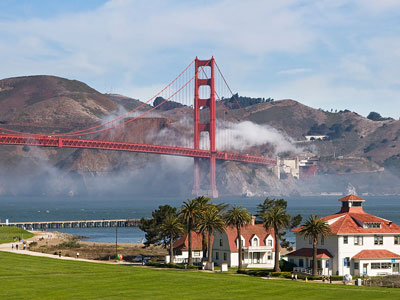
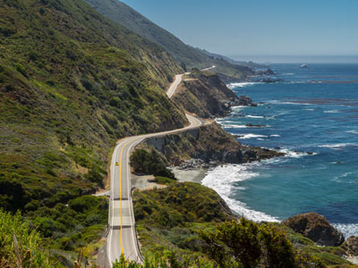
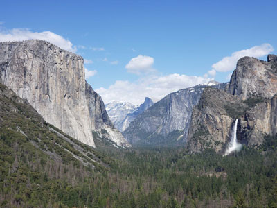


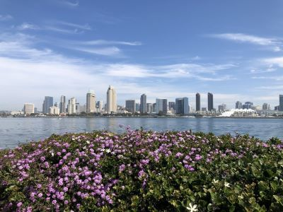
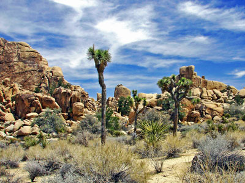
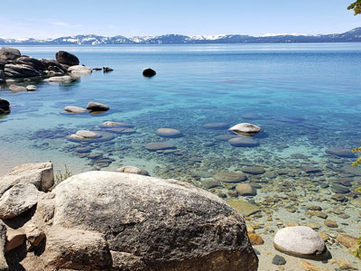
Places to See in Atlanta
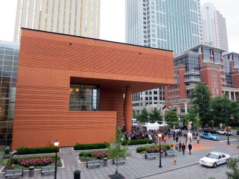
Danksergeant15, CC BY-SA 4.0, via Wikimedia Commons; Image Size Adjusted

APEX Museum
Museum dedicated to African-American history and culture, featuring exhibits on slavery, civil rights, and Black innovation in a historic downtown district.
Danksergeant15, CC BY-SA 4.0, via Wikimedia Commons; Image Size Adjusted
Atlanta Beltline
Multi-use trail and cultural corridor connecting neighborhoods with art, parks, and local businesses.
Danksergeant15, CC BY-SA 4.0, via Wikimedia Commons; Image Size Adjusted
Atlanta Beltline Eastside Trail
Popular segment of the Beltline featuring art, green space, and access to shops and restaurants.
Atlanta Botanical Garden
Expansive urban garden featuring themed plant collections, seasonal exhibits, and immersive nature experiences for all ages.
Atlanta Contemporary
Contemporary art venue showcasing emerging and established artists through rotating exhibitions and public programs.
Atlanta History Center
Expansive cultural campus featuring historic homes, exhibitions, gardens, and immersive experiences that chronicle the diverse history of the American South.
Danksergeant15, CC BY-SA 4.0, via Wikimedia Commons; Image Size Adjusted
Atlantic Station
Mixed-use development featuring shopping, dining, entertainment, and seasonal events in a walkable district with modern urban design.
Birth Home of Martin Luther King Jr.
Restored early 20th-century home offering ranger-led presentations on the formative years of a civil rights leader.
Breman Museum and Cultural Center
Interactive cultural center preserving Jewish heritage through exhibitions, archives, and Holocaust education programs.
Centennial Olympic Park
Downtown greenspace and legacy site of the 1996 Olympics featuring interactive fountains, public art, and seasonal events surrounded by major attractions.
Centers for Disease Control and Prevention
Federal public health agency campus housing research labs, administrative offices, and a museum dedicated to disease prevention and global health education.
College Football Hall of Fame
Interactive museum celebrating college football history with immersive exhibits, memorabilia, and a 45-yard indoor playing field.
Danksergeant15, CC BY-SA 4.0, via Wikimedia Commons; Image Size Adjusted
Computer Museum of America
Technology-focused museum offering hands-on exhibits and rare artifacts that trace the evolution of computing from early machines to modern innovations.
Danksergeant15, CC BY-SA 4.0, via Wikimedia Commons; Image Size Adjusted
David J. Sencer CDC Museum
Public health museum featuring interactive exhibits on disease prevention, epidemiology, and the history of the Centers for Disease Control and Prevention.
Delta Flight Museum
Interactive museum chronicling the history of Delta Air Lines with aircraft displays, aviation artifacts, and immersive exhibits in a restored 1940s hangar.
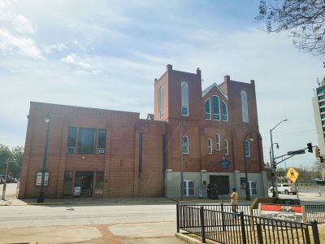
DXR, CC BY-SA 4.0, via Wikimedia Commons; Image Size Adjusted

Ebenezer Baptist Church
Historic church known for its role in the civil rights movement and as the spiritual home of Dr. Martin Luther King Jr.
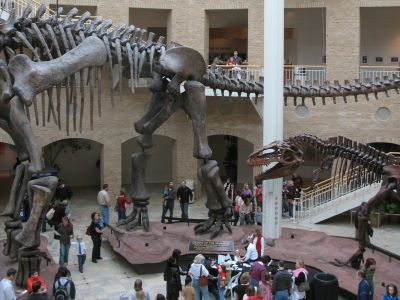
Britt Reints from Pittsburgh, PA, CC BY 2.0, via Wikimedia Commons; Image Size Adjusted

Fernbank Museum of Natural History
Natural history museum offering immersive exhibits on dinosaurs, ecosystems, and global cultures, plus a giant screen theater and outdoor forest trails.
Danksergeant15, CC BY-SA 4.0, via Wikimedia Commons; Image Size Adjusted
Fernbank Science Center
Educational science facility featuring a planetarium, observatory, and interactive exhibits focused on astronomy, biology, and earth sciences.
Danksergeant15, CC BY-SA 4.0, via Wikimedia Commons; Image Size Adjusted
Fox Theatre
Lavishly restored historic theater hosting Broadway shows, concerts, and tours in a Moorish Revival setting with a starry ceiling and grand organ.
Danksergeant15, CC BY-SA 4.0, via Wikimedia Commons; Image Size Adjusted
Freedom Park
Expansive urban greenspace offering trails, art installations, and community events in a natural setting.
Georgia Aquarium
Expansive marine life attraction featuring thousands of aquatic species, immersive exhibits, and interactive experiences.
Georgia State Capitol
Architecturally grand government building featuring a gold dome, historic exhibits, and legislative chambers open for public tours on weekdays.
Danksergeant15, CC BY-SA 4.0, via Wikimedia Commons; Image Size Adjusted
Grant Park
Historic urban park offering walking trails, sports facilities, picnic areas, and seasonal events in a lush, tree-lined setting.
High Museum of Art
Modern art museum featuring a diverse collection of American, European, African, and contemporary works alongside rotating exhibitions and educational programs.
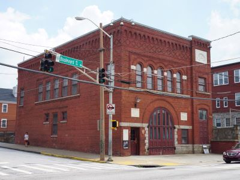
Minipaula, CC BY-SA 3.0, via Wikimedia Commons; Image Size Adjusted

Historic Fire Station 6
Historic firehouse museum showcasing Atlanta’s firefighting history and the desegregation of the city’s fire department.
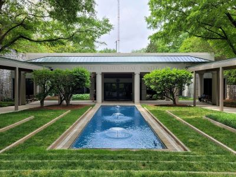
Minipaula, CC BY-SA 3.0, via Wikimedia Commons; Image Size Adjusted
Jimmy Carter Presidential Library and Museum
Presidential library and museum chronicling the life, career, and humanitarian work of Jimmy Carter through exhibits, archives, and gardens.
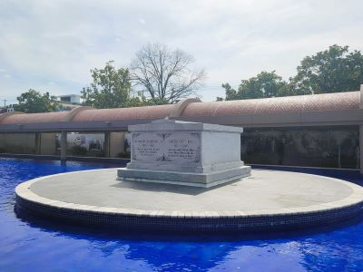
Minipaula, CC BY-SA 3.0, via Wikimedia Commons; Image Size Adjusted
King Center
Memorial and educational campus honoring the legacy of Dr. Martin Luther King Jr. through exhibits, monuments, and community programs.
Danksergeant15, CC BY-SA 4.0, via Wikimedia Commons; Image Size Adjusted
Krog Street Market
Bustling food hall and shopping destination housed in a renovated warehouse offering diverse eateries and local boutiques.
Danksergeant15, CC BY-SA 4.0, via Wikimedia Commons; Image Size Adjusted
Krog Street Tunnel
Public pedestrian and vehicle tunnel known for its ever-changing graffiti art and cultural expression connecting Inman Park and Cabbagetown.
Danksergeant15, CC BY-SA 4.0, via Wikimedia Commons; Image Size Adjusted
Little Five Points
Bohemian neighborhood known for its alternative culture, vintage shops, street art, and eclectic dining and nightlife.
Danksergeant15, CC BY-SA 4.0, via Wikimedia Commons; Image Size Adjusted
Lullwater Preserve
Wooded nature preserve with scenic trails, a lake, and historic ruins offering a peaceful retreat for walking, running, and wildlife observation.
Danksergeant15, CC BY-SA 4.0, via Wikimedia Commons; Image Size Adjusted
Madea's House
Residential filming location featured prominently in Tyler Perry’s Madea film series, known for its iconic porch scenes and Southern charm.
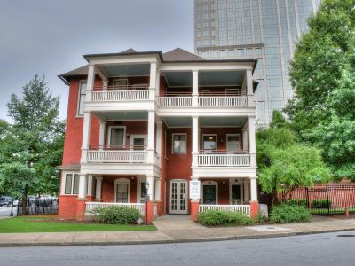
Minipaula, CC BY-SA 3.0, via Wikimedia Commons; Image Size Adjusted
Margaret Mitchell House
Historic Tudor Revival apartment where the author of *Gone with the Wind* lived and wrote, now a museum with exhibits on her life and legacy.
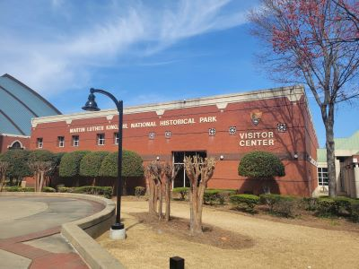
Minipaula, CC BY-SA 3.0, via Wikimedia Commons; Image Size Adjusted
Martin Luther King Jr. National Historical Park
Historic site preserving the legacy of Dr. Martin Luther King Jr. through exhibits, landmarks, and educational programs.
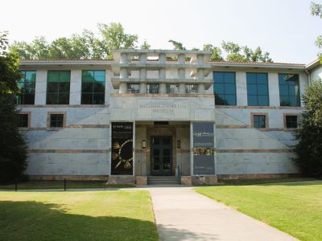
Minipaula, CC BY-SA 3.0, via Wikimedia Commons; Image Size Adjusted
Michael C. Carlos Museum
University museum featuring a diverse collection of ancient artifacts and art from Egypt, Greece, Rome, the Near East, and the Americas.
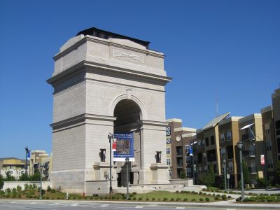
Minipaula, CC BY-SA 3.0, via Wikimedia Commons; Image Size Adjusted
Millennium Gate Museum
Neoclassical arch monument housing exhibits on Georgia history, culture, and architecture.
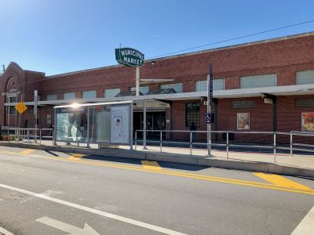
Minipaula, CC BY-SA 3.0, via Wikimedia Commons; Image Size Adjusted
Municipal Market
Indoor public market offering a diverse mix of fresh produce, meats, baked goods, and international cuisine from local vendors in a historic setting.
Danksergeant15, CC BY-SA 4.0, via Wikimedia Commons; Image Size Adjusted
Museum of Contemporary Art of Georgia
Gallery housing contemporary works by Georgia artists in a minimalist setting with rotating exhibitions and educational programs.
Danksergeant15, CC BY-SA 4.0, via Wikimedia Commons; Image Size Adjusted
Museum of Design Atlanta (MODA)
Contemporary design museum offering rotating exhibitions and educational programs that explore the impact of design on everyday life.
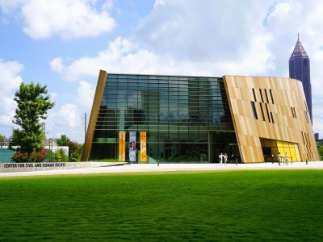
Minipaula, CC BY-SA 3.0, via Wikimedia Commons; Image Size Adjusted
National Center for Civil and Human Rights
Immersive museum exploring the American civil rights movement and global human rights struggles through interactive exhibits and historical artifacts.
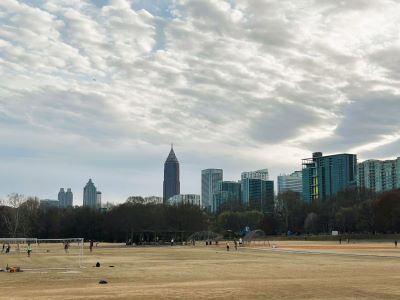
Minipaula, CC BY-SA 3.0, via Wikimedia Commons; Image Size Adjusted
Piedmont Park
Expansive urban park offering scenic trails, sports fields, a dog park, and year-round events in a lush green setting with skyline views.
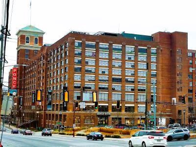
Minipaula, CC BY-SA 3.0, via Wikimedia Commons; Image Size Adjusted
Ponce City Market
Historic multi-use complex featuring a vibrant mix of shopping, dining, residential, and office spaces within a restored early 20th-century building.
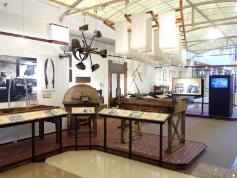
Minipaula, CC BY-SA 3.0, via Wikimedia Commons; Image Size Adjusted
Robert C. Williams Museum of Papermaking
Specialized museum showcasing the history, science, and art of papermaking through rare artifacts, tools, and rotating exhibitions.
Danksergeant15, CC BY-SA 4.0, via Wikimedia Commons; Image Size Adjusted
SCAD FASH Museum of Fashion + Film
Contemporary exhibition space dedicated to exploring the intersections of fashion and film through rotating displays, educational programming, and curated cinematic experiences.
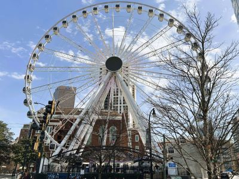
Minipaula, CC BY-SA 3.0, via Wikimedia Commons; Image Size Adjusted
Skyview Atlanta
Towering Ferris wheel offering panoramic views of the city skyline from climate-controlled gondolas in a lively downtown setting.
Danksergeant15, CC BY-SA 4.0, via Wikimedia Commons; Image Size Adjusted
Spelman College Museum of Fine Art
Gallery showcasing works by women of the African Diaspora through exhibitions, lectures, and educational programs.
Danksergeant15, CC BY-SA 4.0, via Wikimedia Commons; Image Size Adjusted
Westside Park
Expansive urban greenspace featuring ADA-accessible trails, playgrounds, pavilions, and panoramic views of a former quarry turned reservoir.
Danksergeant15, CC BY-SA 4.0, via Wikimedia Commons; Image Size Adjusted
Woodruff Park
Urban greenspace in the heart of downtown featuring public art, fountains, a playground, and community events across six landscaped acres.
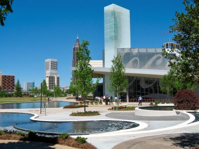
Minipaula, CC BY-SA 3.0, via Wikimedia Commons; Image Size Adjusted
World of Coca-Cola
Interactive museum experience featuring exhibits on the history, culture, and global impact of the Coca-Cola brand.
Danksergeant15, CC BY-SA 4.0, via Wikimedia Commons; Image Size Adjusted
Zoo Atlanta
Accredited zoological park featuring over 1,000 animals from around the world, interactive exhibits, and conservation-focused educational programs.
Overview
Atlanta is the capital and largest city of Georgia and the economic and cultural center of the Southeast, a city of skyscrapers set among rolling, tree-covered hills. It is famous as the birthplace of Dr. Martin Luther King Jr. and a center of the civil rights movement, as the headquarters of Coca-Cola, CNN, and Delta Air Lines, and as the host of the 1996 Summer Olympics. Hartsfield-Jackson Atlanta International Airport is the busiest airport in the world, making the city a major hub for travelers.
Visitors come to Atlanta for the Martin Luther King Jr. National Historical Park and the National Center for Civil and Human Rights, and for attractions near Centennial Olympic Park, including the Georgia Aquarium and the World of Coca-Cola. They also come for the High Museum of Art, Piedmont Park, the Atlanta BeltLine, and the city's famous Southern food and music scene.
History
The city began in 1837 as "Terminus," the end of a planned railroad line, and was renamed Atlanta in 1845, growing rapidly as a rail hub. During the Civil War, it was a key supply center for the Confederacy, and General William Tecumseh Sherman captured it in September 1864 and burned much of it before beginning his March to the Sea. The city rose from the ashes, and in 1868 it became the state capital. In the twentieth century, Atlanta became the center of the civil rights movement, with leaders such as Martin Luther King Jr., John Lewis, and Andrew Young, and in the 1960s it called itself "the city too busy to hate." The 1996 Olympics brought new development and international attention.
Sightseeing and Popular Landmarks
Centennial Olympic Park in downtown is the legacy of the 1996 Games, with a fountain of the Olympic rings, and it is surrounded by the Georgia Aquarium, one of the largest aquariums in the world with whale sharks and beluga whales, and the World of Coca-Cola. The Georgia State Capitol has a gold-leaf dome, and the Fox Theatre is a landmark 1929 movie palace. Ponce City Market, the BeltLine, and Little Five Points are popular neighborhoods, and the SkyView Atlanta Ferris wheel offers views of the city.
Culture and Museums
Atlanta has a wide range of museums. The Martin Luther King Jr. National Historical Park includes King's birth home, Ebenezer Baptist Church, and the King Center, where he and Coretta Scott King are entombed. The High Museum of Art, the Atlanta History Center, the Fernbank Museum of Natural History, the Jimmy Carter Presidential Library, the Margaret Mitchell House, and the CDC Museum are among its major institutions, and the College Football Hall of Fame is downtown.
Parks
Piedmont Park, a 200-acre park in Midtown, is the city's central green space, with views of the skyline and hosts festivals, while the Atlanta BeltLine is a 22-mile loop of trails and parks along old railroad corridors. Grant Park is home to Zoo Atlanta, and the Atlanta Botanical Garden has a canopy walk and orchid displays. Stone Mountain Park and the Chattahoochee River National Recreation Area are within a short drive, and Freedom Park and Woodruff Park are other green spaces.
Sports
Atlanta has several major league teams. The Atlanta Falcons of the NFL and Atlanta United of Major League Soccer play at Mercedes-Benz Stadium, and the Atlanta Hawks of the NBA play at State Farm Arena. The Atlanta Braves of Major League Baseball play at Truist Park, just northwest of the city in Cumberland, and won the World Series in 2021, and the Atlanta Dream of the WNBA play nearby in College Park.
Seasons and Weather
Atlanta has a humid subtropical climate. Summers are hot and humid, with highs in the low 90s°F, and winters are mild, with highs in the 50s°F and occasional ice storms. Spring and fall are the most pleasant seasons, with dogwoods and azaleas in bloom in spring and colorful foliage in fall. Thunderstorms are common in summer, and the city's tree canopy gives it a green look through most of the year.
This article uses material from Wikipedia as well as information from official tourism and institutional sources. Key references include Discover Atlanta, National Park Service Martin Luther King Jr. National Historical Park, Georgia Aquarium, High Museum of Art, Atlanta BeltLine, Atlanta Falcons, Atlanta Braves, and National Weather Service Peachtree City. Wikipedia material is from the articles "Atlanta" and "History of Atlanta", and is available under the Creative Commons Attribution-Share-Alike License 3.0.
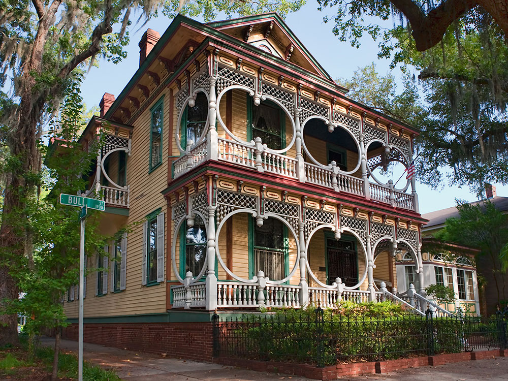